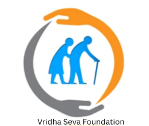

Vridha Seva Foundation
To ensure no elderly person lives without care,comfort,and dignity.

In India, old age is increasingly becoming a time of loneliness and neglect. Every year, heartbreaking cases come to light where elderly parents are abandoned,
left outside homes, dropped at temples, or even harmed by their own families. Many senior citizens who once spent their lives caring for others now struggle without shelter, food, or medical support. Vridha Seva Foundation exists to stand
beside these forgotten elders — to give them safety, care, and the dignity they deserve.
- India has over 140 million senior citizens,and the number is rising rapidly.
- Nearly 1 in 6 elderly people report facing neglect, emotional abuse, or abandonment.
- Many elderly couples and widows live alone with no regular income or support.
- Urban slums, rural villages, and temple towns report a growing number of homeless elders.
- Lack of affordable healthcare makes old age illnesses life-threatening.
Useful Links
About Us
Our Gallery
Contact Us
Donate Now